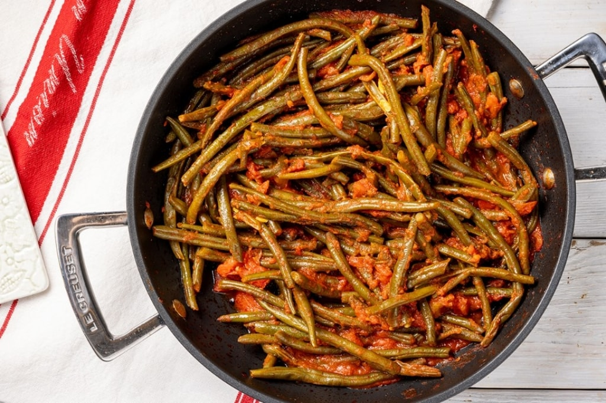

Stewed green beans
 4 items
4 items 15 mins
15 mins Source
Source Veggie
Veggie Salty
Salty

600 ggreen beans1 clovegarlic- olive oil
To prepare the stewed green beans, start by cleaning the green beans by cutting off the ends. Then wash them and drain them well. In a saucepan with high edges, brown a little oil and a clove of garlic cut in half. Add the green beans and let them flavor with the soffritto.
400 gpeeled tomatoes (or tomato pulp)- salt
- pepper
Add the tomato and a little water. Once they start to simmer, lower the heat to medium, season with salt and pepper and cook for about 40 minutes. The stewed green beans are ready to be enjoyed.